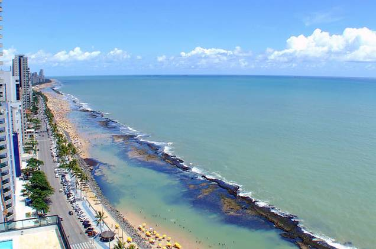
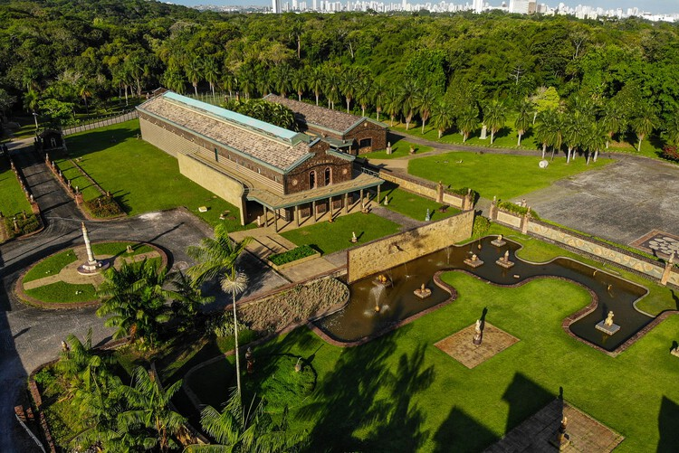
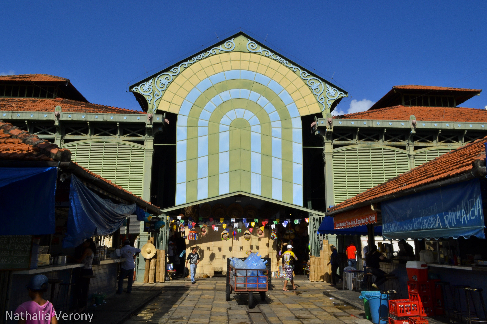
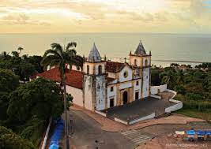

Recife é uma cidade rica em história, cultura e belezas naturais, com muitas opções de pontos turísticos para visitar. Aqui estão alguns dos principais pontos turísticos de Recife:
- Marco Zero: Localizado no bairro do Recife Antigo, o Marco Zero é um monumento histórico que simboliza o início da contagem de distâncias entre as cidades brasileiras.
- Rio Capibaribe: O rio Capibaribe corta a cidade de Recife e é um importante ponto turístico, com passeios de barco e catamarã que oferecem uma vista panorâmica da cidade.
- Praia de Boa Viagem: A praia mais famosa de Recife, com uma extensa faixa de areia e mar cristalino. É um local muito procurado por turistas e moradores locais. 
- Oficina Brennand: Um complexo cultural que abriga o ateliê do artista plástico Francisco Brennand, além de galerias de arte, museus, jardins e uma biblioteca. 
- Mercado de São José: Um dos mercados mais tradicionais de Recife, com uma grande variedade de produtos locais, artesanato, comidas típicas e souvenirs. 
- Instituto Ricardo Brennand: Um museu que abriga uma coleção de arte e objetos históricos, incluindo armas, armaduras, pinturas, esculturas e mobiliário.
- Casa da Cultura: Um antigo presídio que foi transformado em um centro cultural, com lojas de artesanato, restaurantes, cafés e apresentações culturais.
- Parque da Jaqueira: Um parque urbano com muitas áreas verdes, trilhas para caminhada, playgrounds, quadras esportivas e um lago com pedalinhos.
- Torre Malakoff: Um antig''o forte militar que foi transformado em um centro cultural, com exposições, teatro, cinema e apresentações musicais.
- Catedral da Sé: A principal igreja católica de Recife, com uma arquitetura barroca e uma bela fachada. 


Esses são apenas alguns dos pontos turísticos que Recife tem a oferecer, há muitos outros lugares interessantes para visitar nesta cidade encantadora.